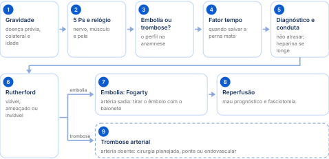
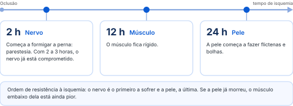
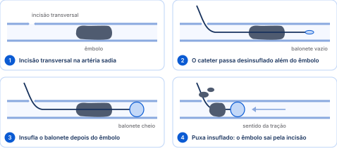
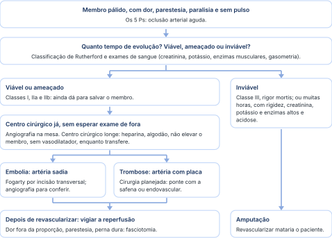

Exames na chegada
Leucocitose no hemograma, creatinina em 2, sódio baixo, potássio alto (6), enzima muscular (creatinofosfoquinase) em 30.000 e acidose na gasometria.
Embolia ou trombose, os 5 Ps e a corrida contra o relógio até o centro cirúrgico: quando desobstruir com o Fogarty, quando planejar uma ponte, quando abrir a fáscia e quando a perna já foi.
Organizada a partir da aula de 28 de outubro de 2026, com a linguagem ajustada para estudo. A legenda de cores está na página 2.

A artéria entope de repente e o membro passa a receber pouco ou nenhum sangue. O tamanho do estrago depende de três coisas: se a artéria já era doente, se existe circulação de reserva e de quanto músculo a pessoa tem.
Ocluiu o vaso, vem a isquemia. A oclusão arterial aguda nem sempre segue o caminho da doença arterial obstrutiva periférica. Às vezes segue: a pessoa já tinha a doença e, de uma hora para outra, a placa trombosa. Mas pode ser alguém jovem, sem placa nenhuma, com um defeito no coração: depois de uma cirurgia plástica de mama, forma um trombo na perna, o trombo sobe, atravessa o defeito e para numa artéria (a embolia paradoxal, no capítulo 03).
Fechada a artéria, aparece um quadro isquêmico agudo. As duas grandes causas são a embolia arterial e a trombose arterial, que têm diferenças importantes, mas qualquer coisa que diminua o fluxo num vaso pode levar ao quadro.
Uma placa antiga que trombosa se comporta diferente de um coágulo que cai numa artéria sadia.
Com vasos colaterais contornando a obstrução, o quadro pode ser leve ou até passar despercebido.
Pesa pelo tanto de músculo que depende daquela artéria.
Ocluindo agora a artéria femoral de uma estudante jovem e a de um idoso, quem tem mais sintomas é a jovem, porque o músculo dela consome mais: ela tem mais massa muscular. Em muito idoso, o músculo é “um fiapo” e gasta pouco. Esse é um fator muito importante na isquemia.
O membro com a artéria fechada fica pálido, dolorido, dormente, parado e sem pulso. Primeiro sofre o nervo, depois o músculo e, por último, a pele: por isso cada hora conta.
De modo geral, a oclusão de uma artéria grande, como a femoral, dá os 5 Ps da isquemia. Os nomes vêm do inglês, e é por eles que o quadro é lembrado. Alguns livros acrescentam um sexto P.
A perna fica pálida.
Dor no membro isquêmico.
Formigamento, perna amortecida.
Não consegue mexer.
Sem pulso abaixo da oclusão.
Diminuição da temperatura: perna fria.
A regra da oclusão arterial aguda propriamente dita são os 5 Ps (seis, dependendo do livro). A intensidade depende da circulação colateral: com boa colateral, uma oclusão aguda pode até passar despercebida, mas isso não é a regra.

Essa é a ordem de resistência à isquemia. Com 2 a 3 horas, o nervo já está comprometido; a pele é a que mais aguenta. Por isso, quando a pele de um membro isquêmico já morreu, o músculo por baixo dela está ainda pior.
Com os sinais e sintomas clássicos da oclusão arterial aguda, a conduta é cirurgia: 95% das oclusões arteriais agudas vão para o centro cirúrgico. Isso não quer dizer, necessariamente, revascularizar no sentido de fazer uma ponte (um enxerto). Quer dizer arranjar um jeito de levar o fluxo de sangue de volta ao membro: tirando o coágulo, desviando a obstrução ou tratando a artéria por dentro.
Na embolia, um coágulo formado em outro lugar viaja e entope uma artéria que era sadia. Na trombose, a própria artéria, já doente de placa, fecha no lugar. Os sintomas são os mesmos; o tratamento, não.
Na anamnese, o mais importante é tentar saber se é embolia ou trombose. As duas dão os mesmos sintomas, mas a forma de abordar pode ser diferente, e é por isso que vale diferenciar (capítulos 07 e 09).
Paciente jovem com a perna isquêmica não estava “cheio de placa”: pense em embolia. Paciente idoso aumenta a probabilidade de trombose. Na embolia, entre as mulheres prevalece a moléstia reumática; entre os homens, o infarto.
O êmbolo costuma parar na femoral ou na poplítea. A história é de começo súbito (“doutor, faz uma hora minha perna ficou pálida”). Pulso femoral presente e, dali para baixo, nenhum: abrindo a poplítea, o êmbolo vai estar lá.
É o caso da moça que fez uma cirurgia plástica de mama, ficou linda, saiu do quarto e a perna ficou pálida. O trombo nasceu na veia. O esperado seria uma embolia pulmonar, mas ele atravessou um defeito entre os átrios e foi parar numa artéria.
A mesma paciente com flegmasia cerulea dolens na perna esquerda e oclusão arterial aguda na direita. Era uma embolia paradoxal: o trombo da flegmasia passou pelo coração e foi para a outra perna. A perna direita foi aberta e os coágulos retirados; a flegmasia foi tratada clinicamente, e ela melhorou. Era cozinheira e, depois, quis agradecer fazendo uma feijoada.
Depois de muitas horas sem sangue, o músculo morre e o corpo inteiro adoece. Tentar salvar essa perna devolvendo o sangue piora tudo: ela incha, necrosa, e o paciente pode morrer.
Desde a noite anterior, dor na perna. A esposa fez compressa morna e deu diclofenaco; a dor aliviou um pouco, mas durou a noite inteira. Agora a perna está fria, pálida, sem pulso e amortecida, e ele não consegue mexer. A ambulância vem de outra cidade e ele chega a Cascavel às 18 horas: 24 horas de evolução.
Leucocitose no hemograma, creatinina em 2, sódio baixo, potássio alto (6), enzima muscular (creatinofosfoquinase) em 30.000 e acidose na gasometria.
Não. Com o paciente todo descompensado e 24 horas de evolução, revascularizar é matá-lo. A perna já foi.
O que mais importa na oclusão arterial aguda é o tempo. Quando ele passa do limite e já há tantas alterações inflamatórias, tentar salvar o membro traz algo muito pior do que perder a perna. É a isquemia que chegou a um ponto irreversível, em que salvar a perna vai matar o paciente.
“Doutor, mas eu só queria salvar a perna!” Ô, amigo, a perna já foi!
Quando os americanos chegaram aos campos de concentração da Segunda Guerra, tinham comida nos caminhões, mas dar muita comida de uma vez a quem passou tanto tempo em privação podia fazer mal (é uma cena de filme, e ele não garante que seja verdade). Na perna, é verdade: depois de 24 horas sem sangue, quando o sangue, o oxigênio e a “comida” voltam, o músculo incha de uma vez, com brutalidade, faz síndrome compartimental e necrose, e o paciente evolui pior do que se esperava.
Revascularizar todo membro isquêmico. Com muitas horas de evolução, perna rígida, creatinina, potássio e enzimas musculares altos e acidose, devolver o sangue à perna pode matar o paciente. Nesse ponto, a saída é a amputação (capítulo 06).
O diagnóstico vem da conversa e do exame do membro. Exame de imagem não pode atrasar a cirurgia: quando é preciso, ele é feito na própria sala, com o paciente já na mesa.
Anamnese e exame físico são fundamentais. Os exames servem para confirmar e para mostrar onde está a obstrução:
Como o pulso não é palpável, confirma se ainda há um fluxo mínimo. A maioria dos cirurgiões vasculares de plantão anda com um.
Ajuda a escolher a melhor intervenção. Hoje a maioria dos hospitais tem, mas nem sempre está disponível.
Feita no centro cirúrgico, com o paciente na mesa, para ver onde está o trombo.
Na oclusão arterial aguda não dá para mandar o paciente fazer exame fora (“vai lá, faz e me traz”): quando ele voltar, a perna terá se perdido. Chegou na emergência, vai para o centro cirúrgico; se precisar de exame, ele é feito lá. O exame que geralmente se faz é a angiografia na mesa:
Pedir exame e esperar o resultado. Enquanto o paciente vai e volta, a perna se perde. Quando o eco-Doppler não está à mão, ele só adia o tratamento: o caminho é subir direto para o centro cirúrgico e fazer a angiografia lá.
De volta a Três Barras: o hospital da cidade não opera, a ambulância vem de outra cidade e o paciente só chegará a Cascavel no fim da tarde. Ele precisa da cirurgia, mas ela vai atrasar porque ele está longe do centro que opera, e a chance de salvar o membro cai. Para minimizar o dano até lá:
É a única situação em que eu vou anticoagular um paciente que está com oclusão arterial: se ele não puder subir imediatamente para o centro cirúrgico.
Antes de operar, é preciso saber se ainda dá para salvar o membro e quanta pressa há. Quem sente e mexe vai ficar bem; quem já não sente nem mexe precisa ser operado agora; perna dura já morreu.
Com os 5 Ps presentes, o tratamento não pode ser adiado, porque o membro estará em um de três estágios: viável, que vai para a cirurgia e fica 100%; ameaçado, já com alguma perda funcional ou do nervo; e irreversível, o membro que é melhor não revascularizar, porque revascularizar mataria o paciente.
Depois de cirurgias cardíacas muito difíceis, com o coração muito fraco, usa-se o balão intra-aórtico. Ele tem um sensor que monitora a sístole e, sincronizado com ela, insufla cerca de 50 mL dentro da aorta, o que melhora a eficiência do coração. O balão é grosso e entra pela artéria femoral. Uma paciente no pós-operatório ficou com a perna completamente pálida; só chamaram o cirurgião vascular no dia seguinte, com a perna dura, sem mexer: rigor mortis. A amputação foi indicada, a família recusou, e ela morreu algumas horas depois.
Nos livros: o balão intra-aórtico insufla na diástole e esvazia logo antes da sístole.
Nos livros: na tabela clássica de Rutherford, a classe IIb ainda mantém o sinal venoso ao Doppler; o sinal venoso desaparece na classe III.
Na embolia, a artéria é sadia e o problema é só o coágulo. Um cateter fino, com um balãozinho na ponta, passa além do coágulo, infla e puxa tudo para fora por um corte pequeno.
Quando o diagnóstico é de embolia, o tratamento costuma ser simples. O panorama mudou com o cateter de Fogarty, que permite tirar o êmbolo: é uma forma de revascularizar, mas sem a ideia de ponte.

Chamar de embolia o que é dissecção. É o diagnóstico errado de embolia mais frequente na prática dele. Na dissecção, a parede do vaso se separou e fechou a artéria: o Fogarty passa e não sai nada, porque não há êmbolo para tirar. “E dissecção é um pepino.”
A tromboaspiração é uma das tecnologias endovasculares novas, e muitos médicos a usam. A vantagem é não precisar de corte, mas o custo é mais de cem vezes maior; no Brasil, esse bom senso às vezes falta.
O trombolítico, visto na aula prática, é opção quando é difícil tirar o coágulo: o Fogarty passa, mas o coágulo está lá há tanto tempo que grudou e não sai. A indicação é especialmente quando há trombose arterial associada: na própria trombose, ou na embolia que ficou muitos dias, com o trombo propagando e obstruindo artérias menores.
Quando o sangue volta a um músculo que ficou muito tempo sem ele, as células incham de uma vez. A fáscia que envolve o músculo não estica, a pressão sobe e o músculo sofre; abrir a fáscia é o que salva a perna.
Exemplo: o Fogarty tirou os coágulos e não voltou sangue pela artéria. Falta de refluxo indica que as colaterais já fecharam, porque o coágulo ficou muito tempo lá dentro. Os sinais de mau prognóstico podem levar à amputação:
Aperte bem a ponta do dedão e solte: a pele fica pálida e logo volta a encher. No membro com mau prognóstico, aperta-se, solta-se e nada muda: os capilares estão todos trombosados. Não há o que fazer, e a amputação, por impactante que seja, pode salvar a pessoa.
Depois de muito tempo em isquemia, as bombas das células travam. A bomba de sódio e potássio gasta energia; sem ela, o potássio para de entrar e o sódio para de sair, e o sódio se acumula dentro das células.
A fasciotomia abre a fáscia e deixa o músculo respirar. A ferida fica aberta até o músculo desinchar: às vezes leva 2 a 3 meses para conseguir fechar. E a cicatriz? Melhor a cicatriz do que perder a perna.
Depois da revascularização, estes sinais pedem fasciotomia, senão a pessoa perde o membro.
Fora da proporção.
Formigamento.
Músculo endurecido.
Atrasar a fasciotomia. Feita tarde, deixa contratura isquêmica: a mão ou o pé trava numa posição, e a pessoa fica sequelada para sempre.
Uma placa antiga, que vinha estável, se instabiliza e entope a artéria. Tirar o coágulo não tira a placa: muitas vezes é preciso uma ponte (um desvio) ou um tratamento por dentro do vaso, e a cirurgia já deve ir planejada.
Na trombose arterial, a artéria é doente. É a continuação da doença arterial obstrutiva periférica: o paciente tinha claudicação, talvez nem tivesse dor em repouso, e uma placa estável. Algo a instabilizou, ela trombosou, e ele passou da doença crônica para a oclusão. Os sintomas dependem da zona da trombose e da colateral: quem vinha formando colaterais pode ficar até assintomático ou oligossintomático.
Com os 5 Ps, o paciente com trombose também vai para a cirurgia, e o fator tempo conta do mesmo jeito. A diferença é o que fazer lá dentro: às vezes se tenta o Fogarty, mas na maioria das vezes a cirurgia já precisa ir mais planejada, e pode ser preciso uma revascularização por ponte.
O Fogarty tem de passar em artéria livre, sem muita placa: passa, insufla e puxa o êmbolo. Na trombose, a artéria é toda doente, cheia de placa, e às vezes o cateter nem passa. Mesmo quando sai o coágulo, a placa fica.
Ir para toda cirurgia achando que vai passar um Fogarty. No êmbolo, funciona bem. Na trombose, pode dar problema, porque ali não havia só um êmbolo: havia placa também.
O tratamento endovascular ajuda bastante quando, depois de tirar o coágulo, sobra uma placa grande: tenta-se aspirar e, se não der certo, faz-se logo a angioplastia. Nas tromboses arteriais, ele tem trazido resultado um pouco melhor.
Oclusão arterial aguda num paciente com doença arterial obstrutiva periférica, que já tinha perdido a outra perna por amputação. Em vez de abrir a artéria e insistir no Fogarty, nem se foi atrás dos coágulos: a angiografia mostrava tudo ocluído, mas uma boa artéria distal, e foi feito direto um desvio. É o mesmo caso mostrado na aula de doença arterial obstrutiva periférica.
Aqui tudo ocluído, mas aqui uma boa artéria distal: meu amigo, já vai para a ponte que você vai ser mais feliz!
Para ser médico tem que ser um pouquinho a mais que a média.
Quando você faz bem uma coisa, as pessoas vão te procurar. Pode ficar bem tranquilo quanto a isso.
Jovem sofre mais que idoso: mais músculo, mais consumo. No jovem, 2 horas podem custar a perna; no idoso, 12 horas podem ser toleradas.
Os 5 Ps: palidez, dor, parestesia, paralisia e ausência de pulso. Alguns livros somam a poiquilotermia (perna fria).
Ordem de resistência: nervo (2 horas), músculo (12 horas), pele (24 horas). Pele morta, músculo pior.
Com os 5 Ps, cirurgia: 95% das oclusões arteriais agudas vão para o centro cirúrgico.
Embolia: cardiopata, arritmia, doença de válvula, mais jovem, artéria sadia. Trombose: idoso, placa que instabilizou.
Embolia paradoxal: trombo da veia que passa pelo defeito entre os átrios e vai para uma artéria (perna ou cabeça).
Fator tempo: com 24 horas, rigidez, creatinina, potássio e enzimas altos e acidose, salvar a perna mata o paciente.
Não atrasar: nada de exame fora; angiografia na mesa do centro cirúrgico.
Heparina só quando o paciente não pode ir já para a cirurgia; algodão, não elevar, sem vasodilatador.
Rutherford: I viável, IIa marginalmente ameaçado, IIb ameaça imediata (sem nenhum sinal no Doppler), III inviável (rigor mortis).
Mau prognóstico: sem refluxo depois do Fogarty, rigidez, síndrome compartimental, creatinina e enzimas subindo, enchimento capilar ausente.
Depois de revascularizar: dor fora da proporção, parestesia e perna dura pedem fasciotomia.
Fogarty só em artéria livre. Na trombose, cirurgia planejada: ponte com a safena ou endovascular.
